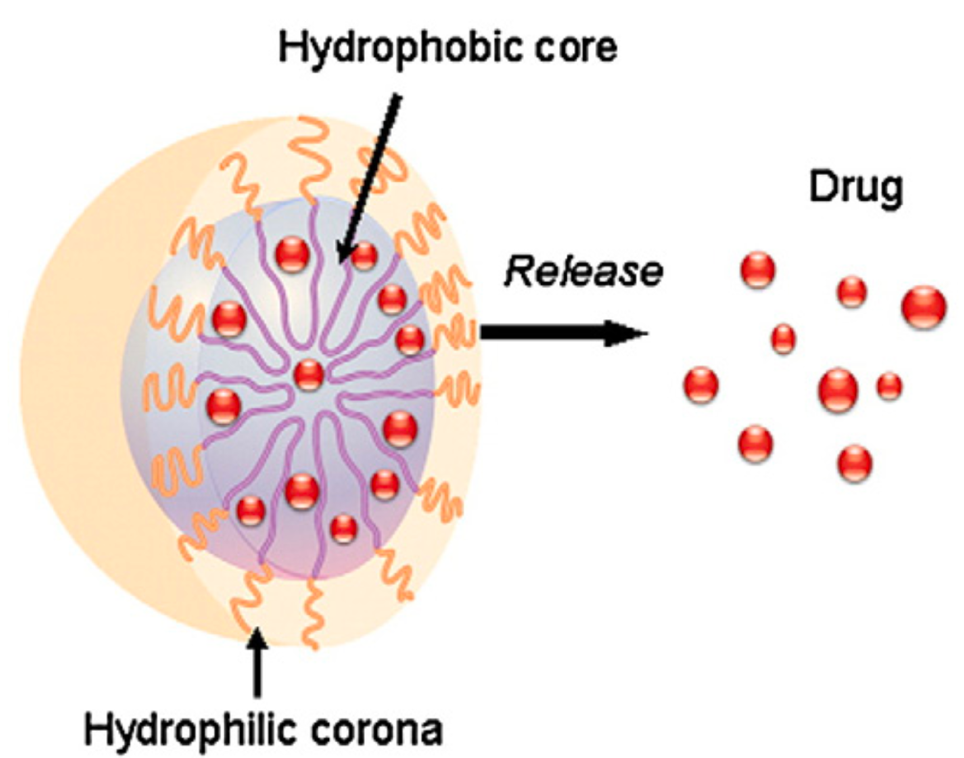

Our research group has previously focused on the stabilization of proteins by various media such as PEG and alkylammonium formate ionic liquids. We would like to know how Pluronic polymers compare for the stabilization of proteins.
Here is a link about Pluronic polymersPluronic polymers are neutral, uncrosslinked, triblock polymers, ABA-typed,composed of polyethylene oxide and polypropylene oxide. The Pluronic polymer we used in this study is Pluronic F127, which has an averaged molar mass of 13,000 Dalton. At low temperature and low concentration, Pluronic F127, in aqueous solution, will form a transparent micellar sol state - freely flowing liquid. At high temperature and high concentration, Pluronic F127 in aqueous solution will form a non-polar gel, an uncrosslinked cubic liquid crystalline phase, where spherical micelles are arranged with local cubic symmetry.Because of the amphiphilic structure of Pluronic F127, it can form micelles in aqueous solution, where polypropylene oxide forms the inner core of the micelle, and polyethylene oxide forms the outer shell.
This research was carried out at Miami University, Oxford OH.
| Pluronic Type | Molecular Weight |
| P65 | 3,500 Da |
| P104 | 4,950 Da |
| PF80 | 7,990 Da |
| P123 | 5,280 Da |
| F68 | 8,780 Da |
| F127 | 13,400 Da |
The Pluronic F127 polymer has been used as carrying media drug for delivery and gene transfer. In aqueous solution, because the hydrophobic polypropylene oxide inner core is separated from the outside environment by the hydration shell of the hydrophilic polyethylene oxide chains, it can provide a hold space for incorporation of various reagents such as LDH protein molecules so that they can remain in a scattered state and can protect the incorporated molucules from surroundings. 